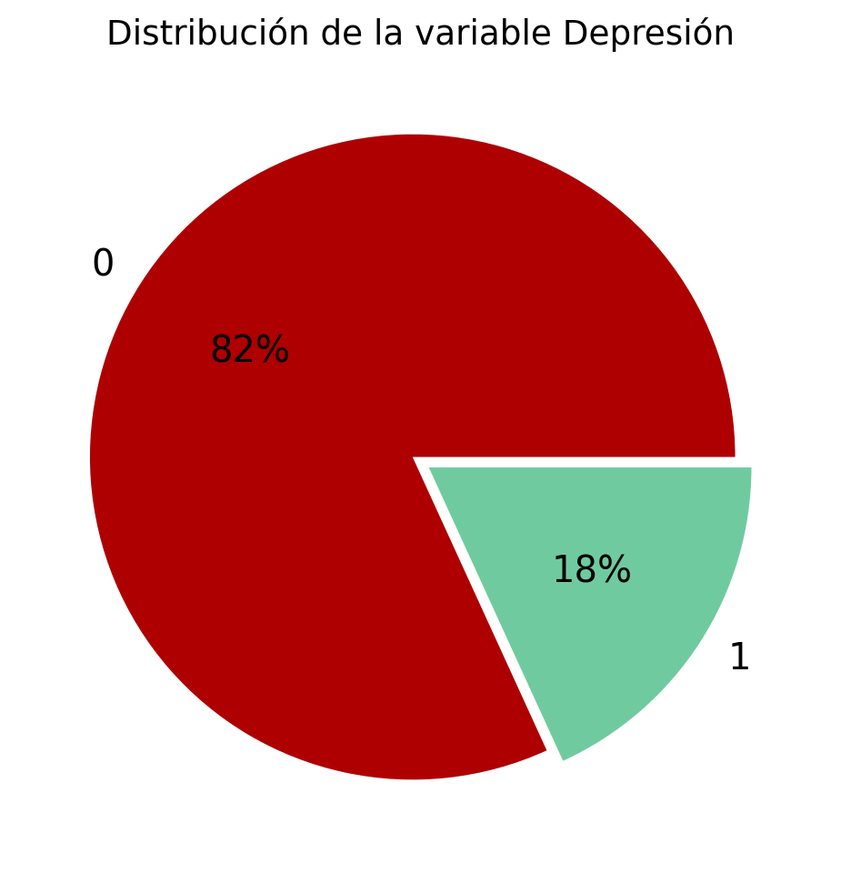

En este proyecto, abordaremos la tarea de predecir la variable objetivo Depresión utilizando un conjunto de datos titulado Salud Mental. Este dataset es el resultado de una encuesta integral cuyo propósito fue analizar los factores asociados al riesgo de depresión en adultos. La comprensión de estos factores puede contribuir al desarrollo de intervenciones más efectivas en el ámbito de la salud mental.
La encuesta fue llevada a cabo de manera anónima entre enero y junio de 2023 en diversas ciudades, involucrando a personas de diferentes orígenes y profesiones. Los participantes, con edades entre 18 y 60 años, compartieron voluntariamente información sobre una amplia variedad de aspectos, tales como edad, género, ciudad de residencia, entre otros.
El conjunto de datos contiene 140,700 registros en el conjunto de entrenamiento y está compuesto por 20 variables, descritas a continuación:
Variable
Descripción
id
Identificador único del registro
Nombre
Nombre del participante
Género
Género del participante
Edad
Edad del participante
Ciudad
Ciudad de residencia
Profesionista/Estudiante
Ocupación principal
Profesión
Campo laboral o académico
Presión_académica
Nivel de presión relacionado con los estudios
Presión_laboral
Nivel de presión relacionado con el trabajo
CGPA
Promedio general acumulado
Satisfacción_académica
Nivel de satisfacción con los estudios
Satisfacción_laboral
Nivel de satisfacción con el trabajo
Tiempo_dormir
Horas promedio de sueño por día
Hábitos_alimenticios
Calidad percibida de los hábitos alimenticios
Grado_académico
Nivel más alto de educación alcanzado
Pensamientos_suicidas
Indicadores de pensamientos suicidas
Horas_estudio/trabajo
Promedio de horas dedicadas a estudio o trabajo
Estrés_financiero
Percepción de presión financiera
Antecedente_familiar_enfermedad_mental
Presencia de antecedentes familiares de enfermedad mental
Depresión
Indicador binario de depresión (variable objetivo)
El análisis de este conjunto de datos permitirá explorar y modelar las relaciones entre las variables predictoras y la variable objetivo, contribuyendo así a un mejor entendimiento del impacto de diversos factores en la salud mental.
EDA
train = pd.read_csv('data/train.csv')test = pd.read_csv("data/test.csv")# rename columnstrain.columns = [col.lower().replace(" ","_") for col in train.columns]test.columns = [col.lower().replace(" ","_") for col in test.columns]train.info()train.head()
vemos que los datos relacionados con estudiantes (Academic Pressure, CGPA y Study Satisfaction) tienen un gran porcentaje de NAs del 80% en sus registros.
Imputación de datos realizaremos una imputación de los datos utlizando la moda para varibales categóricas y media para las variables numéricas.
columns = ['financial_stress','degree','dietary_habits','job_satisfaction','study_satisfaction','profession','academic_pressure','work_pressure','cgpa']for col in columns: train,test = fill_missing_column(train,col,test)
Columna 'financial_stress' - Valores nulos llenados con mean (2.99).
Columna 'degree' - Valores nulos llenados con mode (Class 12).
Columna 'dietary_habits' - Valores nulos llenados con mode (Moderate).
Columna 'job_satisfaction' - Valores nulos llenados con mean (2.97).
Columna 'study_satisfaction' - Valores nulos llenados con mean (2.94).
Columna 'profession' - Valores nulos llenados con mode (Teacher).
Columna 'academic_pressure' - Valores nulos llenados con mean (3.14).
Columna 'work_pressure' - Valores nulos llenados con mean (3.00).
Columna 'cgpa' - Valores nulos llenados con mean (7.66).
Ahora analizamos más las variables después del prepsocesamiento que hicimos.
Primero vemos como se ve la variable depresión en la que, observamos que nuestra base está desbalanceada.
target_colors = ["#ae0001","#6fcb9f",]plt.figure(figsize=(6, 6))plt.pie( train["depression"].value_counts(), labels=train["depression"].value_counts().index, textprops={"fontsize": 15, "color": "black"}, colors=target_colors, autopct="%.0f%%", explode=[0.03, 0.03],)plt.title("Distribución de la variable Depresión", fontsize=14)plt.show()

un data set claramente desbalanceado donde podemos tener un benchmark inical de que nuestro accuray debe ser superior a 82%